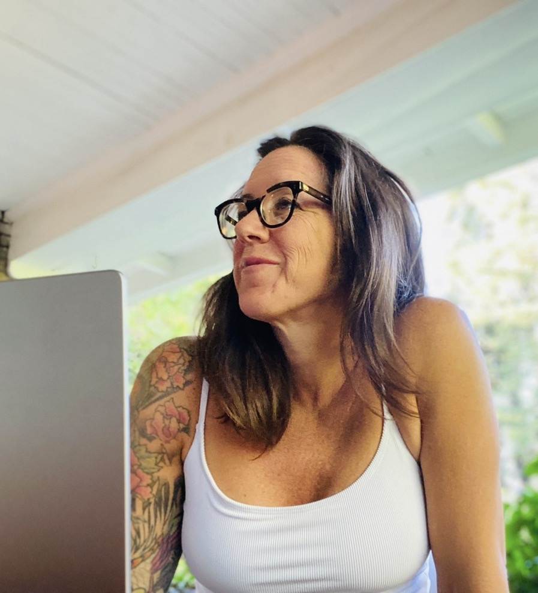
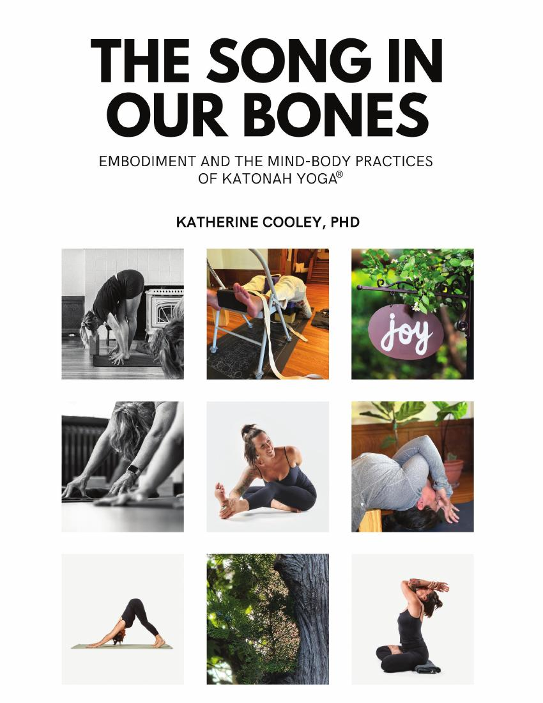

I am a researcher, doctoral educator, and somatic practitioner whose work explores how lived bodily experience shapes psychological life, perception, and the possibilities for change.

I approach the body not merely as an object of study, but as a participant in knowing.
My scholarship brings phenomenology, qualitative inquiry, and somatic education into conversation, with particular interests in embodied self-understanding, habitual patterns, and the relationship between emotional experience and bodily life.
I teach graduate students at Saybrook University, mentor doctoral researchers, and develop interdisciplinary curricula that bring scholarly inquiry into contact with embodied practice.

An account of embodiment as an ongoing process, one involving biology, psychology, and environment, and of the practices that help us inhabit it. Written across years of teaching and doctoral research, it brings phenomenology and somatic inquiry together with the mind-body practices of Katonah Yoga®.
Self-published · 2025 · Foreword by Dages Juvelier Keates
My teaching begins with listening — to students, to the questions emerging in their work, and to the forms of knowing that are not yet fully articulated.
My approach brings methodological rigor together with experiential learning, supporting students as they develop their scholarly voice and investigate the relationship between lived experience and theoretical understanding.
At Saybrook University, since 2020
Courses: Imagery for Health; Mind-Body Therapies and Practices; Movement Modalities for Health; Evidence-Based Coaching; Intermediate and Advanced Integrative Wellness Coaching.
Facilitator of the required Mind, Body, Spirit Integration groups since 2021. Faculty in the Consciousness, Spirituality, and Integrative Health doctoral program, advising students at the qualifying-essay stage. Dissertation committee methodologist.
Selected original curriculum
The Practice Path — a 16-class somatic education program integrating phenomenology, Taoist philosophy, movement, reflective writing, and embodied inquiry. The curriculum explores how somatic resources can help reorganize perception and habitual patterns of responding.
Saybrook faculty page →My research asks how the felt, pre-reflective body can be known and articulated within rigorous inquiry.
My dissertation, a heuristic self-search inquiry into eating disorder recovery through yoga and somatic practice, found that recovery turned less on body image than on the prolonged censoring of emotion and its physiological consequences, a process I describe as othering the body. From it I developed the Self-Emergence Framework: emotional becoming, somatic becoming, bodily un-doing, and self-emergence.
Next, I plan interpretative phenomenological and hermeneutic studies, with co-researchers, of embodied recovery and positive embodiment.
In preparation
Cooley, K. S. Beyond co-researchers: Heuristic self-search inquiry and the contributions of Sandy Sela-Smith. In preparation for submission to Journal of Humanistic Psychology.
Read selected work →I welcome inquiries from faculty, programs, and doctoral researchers whose work touches embodiment, qualitative and first-person methods, or somatic education — including research collaboration, invited lectures, and teaching.
Get in touch